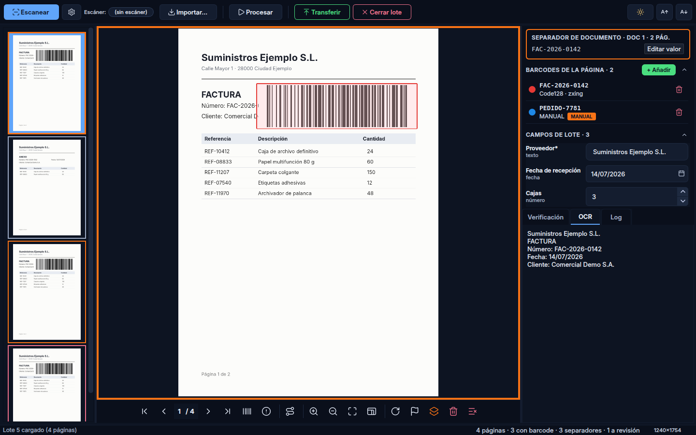

Workbench¶
El Workbench es la ventana de explotación donde se realiza la captura y procesamiento diario.

Áreas de la interfaz¶
El Workbench se compone de cinco áreas:
- Barra de herramientas — Escanear, ⚙ escáner, Importar…, Procesar, Transferir y Cerrar lote, como en FlexibarNET 10 (ver más abajo)
- Panel de miniaturas — Miniaturas con estados de color; la de la página que se ve en el visor lleva un marco del color de acento
- Visor de documentos — Imagen con zoom, pan y recuadros de barcodes, con su barra de herramientas debajo
- Panel derecho — Barcodes de la página, campos de lote y las pestañas Verificación / OCR / Log (ver más abajo)
- Barra de estado — Mensajes, contadores del lote (páginas, con barcode,
separadores y a revisión), tamaño de la página del visor y sus DPI si la
imagen los guarda (
1240×1754 — 300 DPI) y una barra de progreso fina mientras corre el pipeline. Al terminar diceProcesado N/M, con los errores si los hubo.
Panel derecho¶
Funciona como en FlexibarNET 10. De arriba abajo:
- SEPARADOR DE DOCUMENTO — solo si la página del visor es separadora: una tarjeta con borde naranja que dice qué documento abre y cuántas páginas tiene, el valor del separador en monoespaciada y el botón Editar valor (abre el mismo diálogo que al marcar, con el valor actual).
- BARCODES DE LA PÁGINA · N — una fila por código: punto de color (el mismo que
su recuadro en el visor), valor, «simbología · motor · rol» y el distintivo
MANUAL si se añadió a mano. Crece hasta 280 px y luego hace scroll.
- Pasar el ratón por una fila resalta su recuadro en el visor, y al revés.
- + Añadir, Ctrl+N, Ctrl+B o Insert añaden un código a mano.
- La papelera de la fila, o Supr con la fila seleccionada, lo borran sin preguntar: Ctrl+Z deshace la última edición de códigos.
- CAMPOS DE LOTE · N — los campos de lote de la aplicación (solo si tiene). Crece hasta 180 px.
- Pestañas — Verificación (panel de la aplicación, si tiene), OCR (texto de la página) y Log.
Los dos paneles se pliegan con su flecha. Qué paneles y pestañas se ven, y el orden de las pestañas, se configura por aplicación en Configurador → General → Pestañas del Workbench; ahí también se puede ocultar + Añadir.
Al abrir una página a revisión, la barra de estado muestra el motivo y cuántos errores de procesado tiene (el detalle, en la pestaña Log).
Estados de página¶
Las miniaturas muestran el estado mediante bordes de color:
| Color | Estado |
|---|---|
| Rojo | A revisión o excluida |
| Naranja | Página separadora (abre un documento) |
| Azul | Con campos de indexación |
| Verde | Con códigos de barras |
| Gris | Sin reconocimiento |
Visor de documentos¶
El visor central permite:
- Zoom: Ctrl++ / Ctrl+- o rueda del ratón
- Pan: Clic y arrastrar
- Ajustar a ventana: Ctrl+F
- Tamaño real: Ctrl+0
- Rotar: Ctrl+R o el botón de rotar de la barra del visor (90° a la derecha)
- Overlays: recuadros de los códigos de barras sobre la imagen
La barra del visor tiene además:
- Navegación: primera, anterior, siguiente y última página (Inicio, ←, →, Fin) y una casilla donde escribir el número de página y pulsar Intro.
- Siguiente con barcode (Ctrl+→), siguiente a revisión (Ctrl+Mayús+→)
y navegación programable (Ctrl+G, ejecuta el evento
on_navigate_script). - Excluir página (icono de bandera, Ctrl+M): marca o desmarca la página como excluida; la miniatura se pone en rojo.
- Eliminar página actual (Supr) y Borrar desde aquí (de la página actual al final del lote). Las dos piden confirmación.
Ctrl+P reprocesa la página actual con el pipeline. La lista completa de atajos está en Atajos de teclado.
Separadores de documento¶
Un documento es el tramo de páginas que va de una página separadora a la siguiente. Las separadoras las marca el paso Barcode (ver Pipeline) o el operador:
- Marcar: el botón de separador de la barra del visor (icono de capas) o Ctrl+D. Un diálogo pide el valor, pre-rellenado con el código que cumple la condición del paso Barcode; si no hay, con el primer código de la página; si tampoco, con el valor por defecto del paso. Si el paso define una regex para el valor manual, se valida mientras escribes y Aceptar no se habilita hasta que cumple. Se admite dejarlo vacío. Cancelar no marca nada.
- Desmarcar: el mismo botón o Ctrl+D sobre una separadora. Quita la marca y el valor; los códigos de barras de la página no se tocan.
- Reordenar: Alt+↑ / Alt+↓ mueven la página una posición. La página viaja con todos sus datos, marca incluida, así que los documentos se recalculan solos. No se puede reordenar mientras corre el pipeline.
El botón de separador se pone naranja cuando la página es separadora. Si el paso Barcode tiene la detección activa, reprocesar la página recalcula la marca y pisa la manual.
Barra de herramientas¶
| Botón | Atajo | Qué hace |
|---|---|---|
| Escanear (azul) | F5 | Captura con el escáner elegido en ⚙ |
| ⚙ | — | Abre el panel del escáner: dispositivo (con ↻ para volver a buscar), fuente Flatbed/ADF y «Mostrar las opciones del escáner al capturar» |
| Escáner: … | — | Indica el escáner y la fuente con los que se capturará |
| Importar… | Ctrl+I | Añade ficheros al lote actual |
| Procesar | F9 | Pasa el pipeline por todas las páginas del lote |
| Transferir (verde) | Ctrl+T | Valida y transfiere el lote |
| Cerrar lote (rojo) | Ctrl+W | Cierra el lote sin transferir |
Mientras corre el pipeline, Escanear, Importar y Procesar quedan deshabilitados. A la derecha están el cambio de tema y el tamaño de letra.
Escaneo¶
- La primera vez, abrir ⚙ y elegir el escáner. La lista se busca al abrir el panel, no al abrir el Workbench (en Linux puede tardar unos segundos). El escáner elegido se recuerda por aplicación.
- Clic en Escanear (o F5). Si no hay escáner elegido, DocScan lo busca y, si no encuentra ninguno, avisa y abre ⚙.
- Las páginas se importan y procesan automáticamente por el pipeline.
Importación¶
- Clic en Importar… (Ctrl+I) y seleccionar ficheros. Si la aplicación define el
evento
on_importy este devuelve un valor, sustituye a la importación estándar. - O arrastrar ficheros directamente sobre el visor
- Formatos: TIFF (multi-página), JPEG, PNG, BMP, PDF